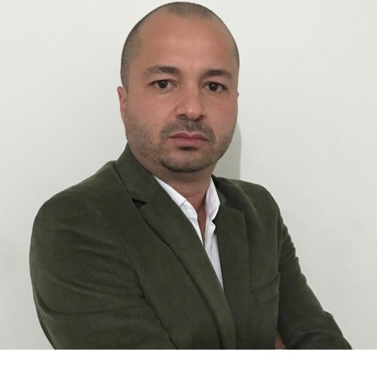
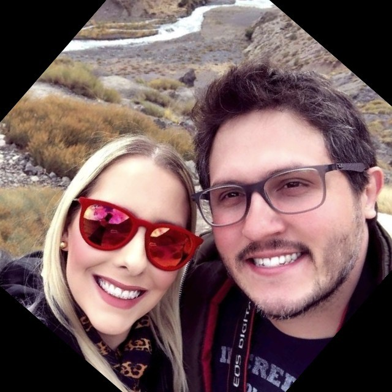

Sobre
O que é nascido de Deus vence o mundo e esta é a vitória que vence o mundo: a nossa fé. Quem é que vence o mundo? Somente aquele que crê que Jesus é o Filho de Deus. (1 João 5:4-5).
Analista TI, Segurança & Redes
- Data-Nascimento: 19 Jan 1990
- Github: github.com/allanpedro
- Fone: +55 43 9-9827-4360
- Cidade: Santo Antônio da Platina, PR
- Idade: 32
- E-mail: allan.caldi@outlook.com
Profissional com conhecimentos na área de tecnologia da informação, service desk e infraestrutura, boa comunicação com pessoas, facilidade em encontrar soluções de problemas, proativo e familiarizado com as tecnologias modernas do mercado.
Habilidades
Algumas tecnologias que venho trabalhando e estudando:
Resumo
Minha formação e experiências profissionais:
Formação
Pós Graduação em redes de computadores & Segurança
2019 - 2020
Centro de Inovação VINCIT, UNICIV, Londrina-PR
Profissional atualizado com as tecnologias de redes existentes no mercado e capazes de desenvolver e implantar projetos, configurar e gerenciar ambientes de redes, com qualidade e segurança nos processamentos da comunicação de dados necessários para sua operação
Tecnologia em Segurança da Informação
2014 - 2017
FATEC, Ourinhos-SP
O tecnólogo em segurança da informação zela pela integridade e resguardo de informações das empresas, protegendo-as contra acessos não autorizados. Assim, dentro dos princípios de confidencialidade, integridade e disponibilidade, esse profissional realiza análises de riscos, administra sistemas de informações, projeta e gerencia redes de computadores seguras, realiza auditorias, planeja contingências e recuperação em sinistros. Atua nos aspectos lógicos e físicos, controlando os níveis de acesso aos serviços dos sistemas operacionais, banco de dados e redes de computadores.
Experiências
Analista de TI
2021 - Atual
Faculdades Integradas e Tecnológicas do Paraná
- Infraestrutura de TI
- Firewall Pfsense, dhcp, dns, squid proxy, vlans, backup rclone
- Oracle Cloud
- Ubiquiti Unify
Analista de TI Junior
2011 - Abril 2021
Yazaki do Brasil LTDA, Santo Antº da Platina, PR
- Responsável pelo suporte helpdesk, atendimento de chamados internos e externos
- Instalações e configurações de equipamentos de redes
- Gestão do parque de equipamentos de tecnologia, licenciamento de softwares
- Instalações e configurações de infraestrutura cabeada, wifi, servidores, virtualização, active directory
- Monitoramento de links MPLS e Internet
Monitor de Informática
2008 - Dezembro 2010
Centro Educacional Lar Jesus Adolescente, Santo Antº da Platina, PR
- Instrutor de aulas básicas de informática
- Configuração de redes LAN, TCP/IP
Portfólio
- Todos
- Web
Comentários
Comentários de amigos
Allan é um profissional comprometido, dedicado, responsável. Procura atender as demandas solicitadas com seriedade e assume as necessidades para resolver. Tem bastante conhecimento técnico na área de TI/infraestrutura/suporte.
Fernando Fré
Gestor TI & Segurança da Informação
Tive a oportunidade em trabalhar com o Allan por vários anos. Sempre se mostro pró ativo em suas atividades sempre visando entregar suas atividades com excelência. Ótimo profissional. Recomendo.
Carlos Pereira
Azure|AWS|Google Cloud
Profissional dedicado e sempre em busca de conhecimento para melhorar sua performance e qualidade na entrega. Trabalhei ao seu lado alguns anos e atendeu todas as demandas com qualidade acima do esperado..
Roque Ribeiro
Desenvolvedor Frond End Senior
Allan é um excelente profissional, proativo e sempre em busca de novos conhecimentos e desafios, muito ético nas suas decisões e nas atividades sob sua responsabilidade, sempre em busca de melhorias e visão de soluções tecnológicas..
Guilherme Zanato
Supervisor Logistica
Allan é um profissional diferenciado, sempre foi prestativo e disposto a ajudar nos problemas e trazer soluções de melhoria para a empresa. Consegue manter o TI de Santo Antonio da Platina como referência para toda a empresa, é um talento na sua area de atuação e sempre se especializando para melhorar seus conhecimentos. Foi um prazer tê-lo em meu time.
Eduardo Orsolini
DPO
Contato
Localização:
Rua Deputado Santinho Furtado Nº792
Email:
allan.caldi@outlook.com
Whatsapp:
43 99827-4360